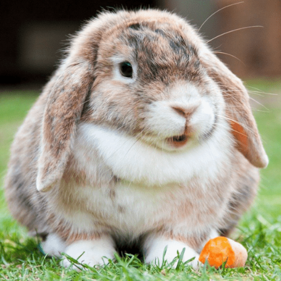

Como a pelagem não é muito longa, os cuidados necessário são menores quando comparados com raças lanosas como o Angorá ou Fuzzy Lop. Uma escovação por semana já é o suficiente para retirar os pelos soltos e manter a pelagem macia e brilhante, mas durante as épocas de troca de pelo, que ocorrem geralmente duas vezes ao ano, a frequência semanal deve aumentar para pelo menos duas vezes. Por ser uma raça muito calma e até mesmo preguiçosa, é essencial que o(a) tutor(a) estimule o pet a fazer exercícios diariamente por meio de brincadeiras e enriquecimento ambiental, evitando, assim, uma série de problemas, dentre eles a obesidade. Os cuidados em geral não diferem de qualquer outro coelho, portanto, é de responsabilidade do(a) tutor(a) fornecer todos os pré-requisitos necessário para o bem-estar e saúde só seu pet. Ao adquirir um coelho (ou qualquer outro pet) o ideal é realizar uma consulta de orientação com um(a) médico(a) especializado em pets não convencionais (silvestres e exóticos) para obtenção de informações sobre como criá-lo de forma adequada.

Wagner
Wagner
O Coelho Mini Lop é de origem Alemã. Suas características marcantes são suas orelhas grossas, longas e caídas. Suas orelhas caídas lhe trazem um jeitinho dengoso, charme único para esse animalzinho. É simplesmente apaixonante.O coelho Mini Lop parece com um urso de pelúcia devido a sua forma de olhar para o dono. Tem um comportamento dócil, mas é mais ativo. Adora correr e brincar com seu dono. É ideal companhia para as crianças e também idosos pois é dócil e brincalhão.